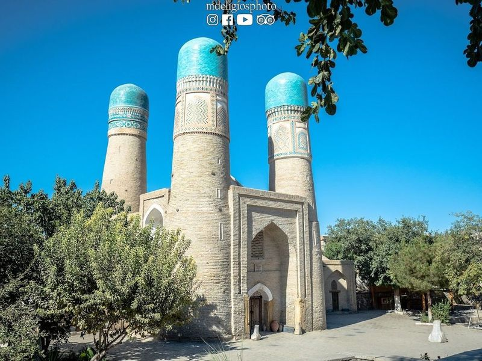
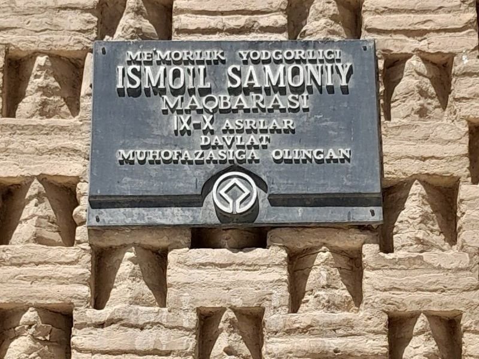
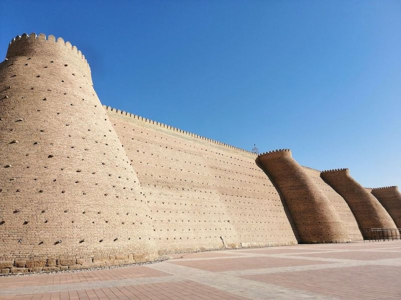
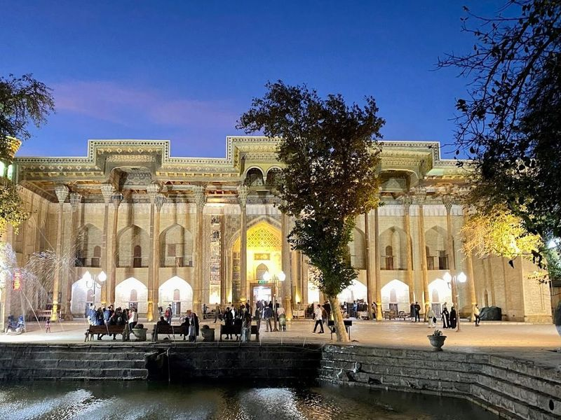
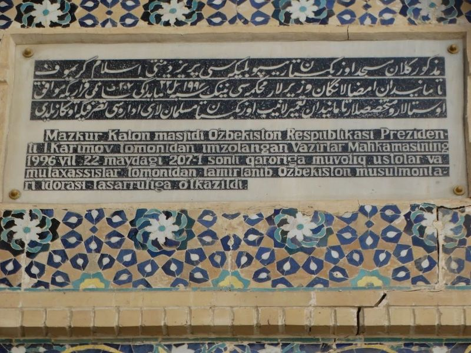
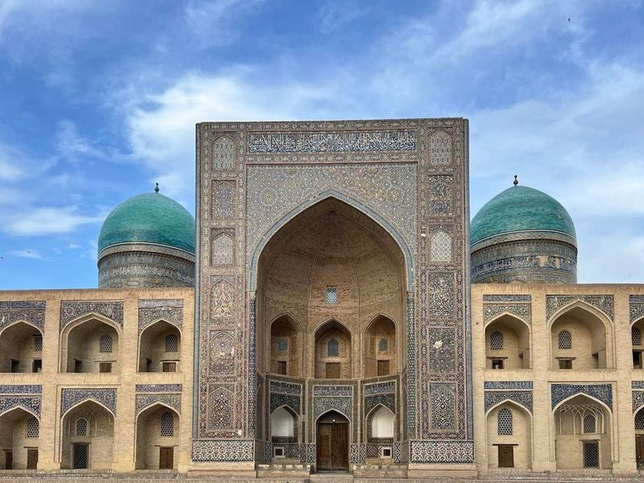
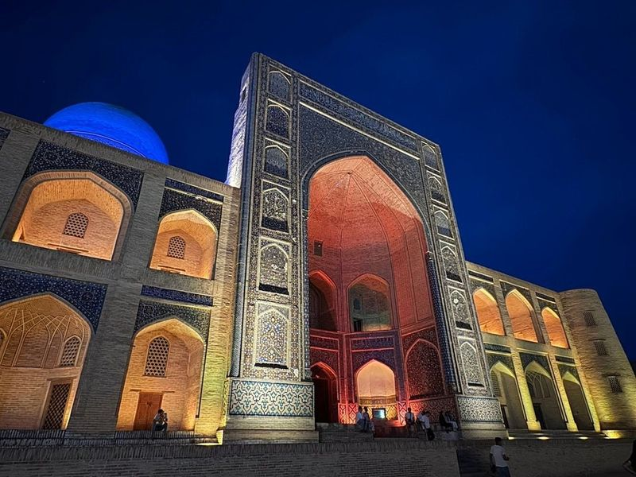
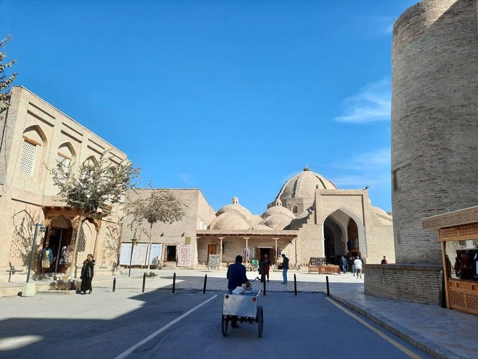
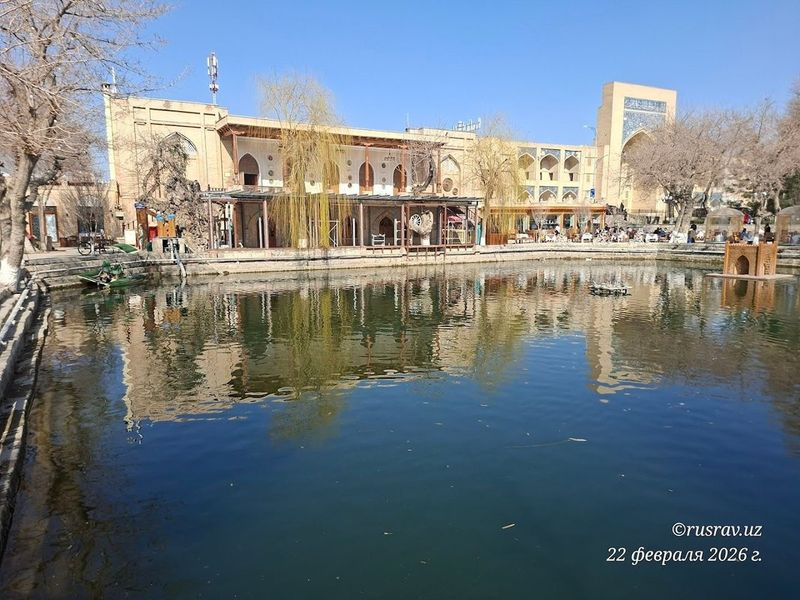
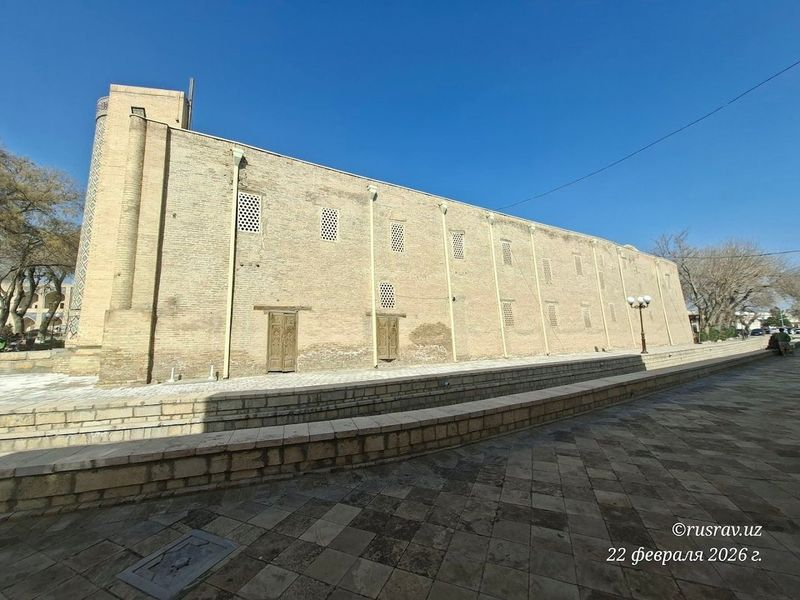

Explore Bukhara
A Brief History
Bukhara served as a Silk Road emporium and Samanid capital, accumulating mosques, madrasas, and covered bazaars around the Po-i-Kalyan complex. Ark fortress walls and minarets record how Central Asian rulers blended Persian Islamic design with caravan trade wealth. Trading domes and Lyabi-Hauz pools still channel visitors through the medieval Silk Road core.
Attractions Map
Top Sights & Activities

Chor Minor Monument
Chor Minor Madrasah, also known as the madrasah of four minarets, is a unique monument located in the northeast of Bukhara. Built in 1807 by a Turkmen merchant, it features an imposing entrance tower with four turrets that resemble mysterious azure flowers from afar. The remaining part of the madrasah showcases elegant and nontraditional shapes, giving it a grand appearance despite its relatively small size.

Ismail Samani Mausoleum
Ismail Samani Mausoleum, located in Samanidov Park just outside the Old Town of Bukhara, is a renowned monument known for its detailed brickwork. Built between 892 and 943 CE as the final resting place for a ruler, it stands as one of the oldest structures in Bukhara. The small domed brick building is constructed in the shape of an almost perfect cube and features intricate woven-like brickwork displaying various geometric shapes.

Ark of Bukhara
The Ark of Bukhara, a fortress dating back to the 5th century, is now home to museums showcasing its rich history. It served as the residence for rulers of Bukhara for over a thousand years and has been rebuilt multiple times. The fortress stands on an artificial hill that has seen various structures come and go over the centuries.

Bolo Hauz Mosque
Nestled in the heart of Bukhara, the Bolo Hauz Mosque stands as a testament to Islamic architecture, having been constructed in 1712. Often referred to as the 40-Pillar Mosque, this landmark features an enchanting ceiling supported by 20 intricately carved wooden pillars that create a mesmerizing reflection in the adjacent pond, giving the illusion of double that number.

Kalan Minaret
Kalon Tower, also known as the Kalon Minaret, is a remarkable 48-meter medieval minaret and watchtower that was built in 1127 CE by the Karakhanid ruler Arslan Khan. The name "Kalon" means great in Tajik, reflecting its significance in Central Asia. This impressive structure has stood for almost nine centuries and was once the tallest building in all of Asia. It features ornate decorations and deep foundations designed to withstand earthquakes.

Mir-i-Arab Madrasa
Mir-i-Arab Madrasa is a striking college in Bukhara, Uzbekistan, known for its intricate tile patterns and vast hall. It shares its courtyard with a mosque and is part of the Po-i-Kalyan complex, which also includes the Kalon Mosque and Kalyan Minaret. Built in 1127, it was once the tallest building in Asia.

Kalan Mosque
Kalan Mosque, located in Bukhara, Uzbekistan, is a architectural monument dating back to the 16th century. It forms part of the Po-i-Kalyan complex alongside the impressive Kalyan Minaret and Miri-Arab Madrasah. The mosque features a large courtyard and 288 domes, with a tiled Iwan portal adding to its grandeur.

Ulugbek Madrasah
Ulugʻbek Madrasasi, completed in 1420, is a historic site in Bukhara. It was built on the orders of Ulugh Beg, a renowned scientist and grandson of Amir Temur. The madrasa features mosaics and tile work on its front facade and interior courtyard. Although it has been converted into small private shops, the exterior tiles, fluted dome, stained windows, and old tombs still reflect its rich history.

Labi Hovuz
Lyab-i Hauz, or Lyabi Hauz Square, is a and historic hub in Bukhara that draws both locals and visitors alike. This picturesque square is framed by madrasahs and monuments, making it the heart of the old city. With an array of shops, cafes, and restaurants offering delectable local dishes, it's an ideal spot to unwind.

Nodir Devonbegi Madrasah
Nadir Divan Begi Madrasah is a complex with an elaborate mosaic-covered gate and a bustling courtyard featuring shops and traditional dance performances. Built in 1622 as a caravanserai, it forms part of the renowned Lyabi-Khauz ensemble, alongside the Kukeldash madrassas. Inspired by the Sherdor madrasah in Samarkand, its decor features motifs reminiscent of that structure, with birds of happiness replacing lions.